6 Kennenlernen der Funktionen
6.1 Intercoder-Reliabilität berechnen
Ihr könnt tidycomm für Inaltsanalysen verwenden. Die Funktion test_icr führt einen Intercoder-Reliabilitätstest durch, indem sie verschiedene Schätzer der Intercoder-Reliabilität für die enthaltenen Variablen berechnet (z.B. Krippendorffs Alpha, Cohens Kappa). Wenn keine Variablen angegeben werden, berechnet die Funktion die Schätzer für alle Variablen im Datensatz (ausgenommen unit_var und coder_var).
Werfen wir einen kurzen Blick auf den fbposts Datensatz, der bereits mit tidycomm geliefert wird. Es handelt sich um einen von Codierern annotierten Datensatz, bei dem jeder Facebook-Beitrag (post_id) von mehreren Codierern (coder_id) annotiert wurde.
## # A tibble: 6 × 7
## post_id coder_id type n_pictures pop_elite pop_people pop_othering
## <int> <int> <chr> <int> <int> <int> <int>
## 1 1 1 photo 1 0 0 0
## 2 1 2 photo 1 0 0 0
## 3 1 3 photo 1 0 0 0
## 4 1 4 photo 1 0 0 0
## 5 1 5 photo 1 0 0 0
## 6 1 6 photo 1 0 0 0Als Nächstes berechnen wir die Intercoder-Reliabilitätswerte für jede Variable im fbposts Datensatz, ausgenommen post_id und coder_id. Die Ausgabe beinhaltet standardmäßig die Simple Percent Agreement, Holsti’s Reliability Estimate (mean pairwise agreement) und Krippendorffs Alpha. Ihr könnt jedoch über optionale Argumente/Parameter andere Schätzer zur Berechnung angeben.
## # A tibble: 5 × 8
## Variable n_Units n_Coders n_Categories Level Agreement Holstis_CR
## * <chr> <int> <int> <int> <chr> <dbl> <dbl>
## 1 type 45 6 4 nominal 1 1
## 2 n_pictures 45 6 7 nominal 0.822 0.930
## 3 pop_elite 45 6 6 nominal 0.733 0.861
## 4 pop_people 45 6 2 nominal 0.778 0.916
## 5 pop_othering 45 6 4 nominal 0.867 0.945
## # ℹ 1 more variable: Krippendorffs_Alpha <dbl>Hier sind einige weitere ICR-Schätzungen:
## # A tibble: 5 × 10
## Variable n_Units n_Coders n_Categories Level Agreement Holstis_CR
## * <chr> <int> <int> <int> <chr> <dbl> <dbl>
## 1 type 45 6 4 nominal 1 1
## 2 n_pictures 45 6 7 nominal 0.822 0.930
## 3 pop_elite 45 6 6 nominal 0.733 0.861
## 4 pop_people 45 6 2 nominal 0.778 0.916
## 5 pop_othering 45 6 4 nominal 0.867 0.945
## # ℹ 3 more variables: Krippendorffs_Alpha <dbl>, Fleiss_Kappa <dbl>,
## # Lotus <dbl>6.2 How to run descriptive analyses
Dieser Teil des Tutorials ist aus meinen Vorbereitungen für die interne Mitarbeitendenfortbildung übernommen und daher auf Englisch.
6.2.1 Index generation
The tidycomm package provides a workflow to quickly add mean/sum
indices of variables to the dataset and compute reliability estimates
for those added indices. The package offers two key functions:
add_index()andget_reliability()
6.2.1.1 add_index():
The add_index() function adds a mean or sum index of the specified
variables to the data. The second argument (or first, if used in a pipe)
is the name of the index variable to be created. For example, if you
want to create a mean index named ‘ethical_concerns’ using variables
‘ethics_1’ to ‘ethics_4’, you can use the following code:
## # A tibble: 1,200 × 16
## country reach employment temp_contract autonomy_selection autonomy_emphasis
## * <fct> <fct> <chr> <fct> <dbl> <dbl>
## 1 Germany Nati… Full-time Permanent 5 4
## 2 Germany Nati… Full-time Permanent 3 4
## 3 Switzerl… Regi… Full-time Permanent 4 4
## 4 Switzerl… Local Part-time Permanent 4 5
## 5 Austria Nati… Part-time Permanent 4 4
## 6 Switzerl… Local Freelancer <NA> 4 4
## 7 Germany Local Full-time Permanent 4 4
## 8 Denmark Nati… Full-time Permanent 3 3
## 9 Switzerl… Local Full-time Permanent 5 5
## 10 Denmark Nati… Full-time Permanent 2 4
## # ℹ 1,190 more rows
## # ℹ 10 more variables: ethics_1 <dbl>, ethics_2 <dbl>, ethics_3 <dbl>,
## # ethics_4 <dbl>, work_experience <dbl>, trust_parliament <dbl>,
## # trust_government <dbl>, trust_parties <dbl>, trust_politicians <dbl>,
## # ethical_concerns <dbl>To create a sum index instead, set type = "sum":
## # A tibble: 1,200 × 16
## country reach employment temp_contract autonomy_selection autonomy_emphasis
## * <fct> <fct> <chr> <fct> <dbl> <dbl>
## 1 Germany Nati… Full-time Permanent 5 4
## 2 Germany Nati… Full-time Permanent 3 4
## 3 Switzerl… Regi… Full-time Permanent 4 4
## 4 Switzerl… Local Part-time Permanent 4 5
## 5 Austria Nati… Part-time Permanent 4 4
## 6 Switzerl… Local Freelancer <NA> 4 4
## 7 Germany Local Full-time Permanent 4 4
## 8 Denmark Nati… Full-time Permanent 3 3
## 9 Switzerl… Local Full-time Permanent 5 5
## 10 Denmark Nati… Full-time Permanent 2 4
## # ℹ 1,190 more rows
## # ℹ 10 more variables: ethics_1 <dbl>, ethics_2 <dbl>, ethics_3 <dbl>,
## # ethics_4 <dbl>, work_experience <dbl>, trust_parliament <dbl>,
## # trust_government <dbl>, trust_parties <dbl>, trust_politicians <dbl>,
## # ethical_flexibility <dbl>Make sure to save your index back into your original data set if you want to keep it for later use:
6.2.1.2 get_reliability()
The get_reliability() function computes reliability/internal
consistency estimates for indices created with add_index(). The
function outputs Cronbach’s α along with descriptives and index
information.
## # A tibble: 1 × 5
## Index Index_of M SD Cronbachs_Alpha
## * <chr> <chr> <dbl> <dbl> <dbl>
## 1 ethical_concerns ethics_1, ethics_2, ethics_3, et… 2.45 0.777 0.612By default, if you pass no further arguments to the function, it will
automatically compute reliability estimates for all indices created with
add_index() found in the data.
## # A tibble: 1 × 5
## Index Index_of M SD Cronbachs_Alpha
## * <chr> <chr> <dbl> <dbl> <dbl>
## 1 ethical_concerns ethics_1, ethics_2, ethics_3, et… 2.45 0.777 0.6126.2.2 Rescaling of measures
Tidycomm provides four functions to easily transform continuous scales and to standardize them:
reverse_scale()simply turns a scale upside downminmax_scale()down- or upsizes a scale to new minimum/maximum while retaining distancescenter_scale()subtracts the mean from each individual data point to center a scale at a mean of 0z_scale()works just likecenter_scale()but also divides the result by the standard deviation to also obtain a standard deviation of 1 and make it comparable to other z-standardized distributions
6.2.2.1 reverse_scale()
The easiest one is to reverse your scale. You can just specify the scale and define the scale’s lower and upper end. Take autonomy_emphasis as an example that originally ranges from 1 to 5. We will reverse it to range from 5 to 1.
The function adds a new column named autonomy_emphasis_rev:
WoJ %>%
reverse_scale(autonomy_emphasis,
lower_end = 1,
upper_end = 5) %>%
dplyr::select(autonomy_emphasis,
autonomy_emphasis_rev)## # A tibble: 1,200 × 2
## autonomy_emphasis autonomy_emphasis_rev
## <dbl> <dbl>
## 1 4 2
## 2 4 2
## 3 4 2
## 4 5 1
## 5 4 2
## 6 4 2
## 7 4 2
## 8 3 3
## 9 5 1
## 10 4 2
## # ℹ 1,190 more rowsAlternatively, you can also specify the new column name manually:
WoJ %>%
reverse_scale(autonomy_emphasis,
name = "new_emphasis",
lower_end = 1,
upper_end = 5) %>%
dplyr::select(autonomy_emphasis,
new_emphasis)## # A tibble: 1,200 × 2
## autonomy_emphasis new_emphasis
## <dbl> <dbl>
## 1 4 2
## 2 4 2
## 3 4 2
## 4 5 1
## 5 4 2
## 6 4 2
## 7 4 2
## 8 3 3
## 9 5 1
## 10 4 2
## # ℹ 1,190 more rows6.2.2.2 minmax_scale()
minmax_scale() just takes your continuous scale to a new range. For example, convert the 1-5 scale of autonomy_emphasis to a 1-10 scale while keeping the distances:
WoJ %>%
minmax_scale(autonomy_emphasis,
change_to_min = 1,
change_to_max = 10) %>%
dplyr::select(autonomy_emphasis,
autonomy_emphasis_1to10)## # A tibble: 1,200 × 2
## autonomy_emphasis autonomy_emphasis_1to10
## <dbl> <dbl>
## 1 4 7.75
## 2 4 7.75
## 3 4 7.75
## 4 5 10
## 5 4 7.75
## 6 4 7.75
## 7 4 7.75
## 8 3 5.5
## 9 5 10
## 10 4 7.75
## # ℹ 1,190 more rows6.2.2.3 center_scale()
center_scale() moves your continuous scale around a mean of 0:
WoJ %>%
center_scale(autonomy_selection) %>%
dplyr::select(autonomy_selection,
autonomy_selection_centered)## # A tibble: 1,200 × 2
## autonomy_selection autonomy_selection_centered
## <dbl> <dbl>
## 1 5 1.12
## 2 3 -0.876
## 3 4 0.124
## 4 4 0.124
## 5 4 0.124
## 6 4 0.124
## 7 4 0.124
## 8 3 -0.876
## 9 5 1.12
## 10 2 -1.88
## # ℹ 1,190 more rows6.2.3 Univariate analysis
Univariate, descriptive analysis is usually the first step in data
exploration. Tidycomm offers four basic functions to quickly output
relevant statistics:
describe(): For continuous variablestab_percentiles(): For continuous variablesdescribe_cat(): For categorical variablestab_frequencies(): For categorical variables
6.2.3.1 Describe continuous variables
There are two options two describe continuous variables in tidycomm:
describe()andtab_percentiles()
First, the describe() function outputs several measures of central
tendency and variability for all variables named in the function call
(i.e., mean, standard deviation, min, max, range, and quartiles).
Here’s how you use it:
## # A tibble: 3 × 15
## Variable N Missing M SD Min Q25 Mdn Q75 Max Range
## * <chr> <int> <int> <dbl> <dbl> <dbl> <dbl> <dbl> <dbl> <dbl> <dbl>
## 1 autonomy_empha… 1195 5 4.08 0.793 1 4 4 5 5 4
## 2 ethics_1 1200 0 1.63 0.892 1 1 1 2 5 4
## 3 work_experience 1187 13 17.8 10.9 1 8 17 25 53 52
## # ℹ 4 more variables: CI_95_LL <dbl>, CI_95_UL <dbl>, Skewness <dbl>,
## # Kurtosis <dbl>If no variables are passed to describe(), all numeric variables in the
data are described:
## # A tibble: 12 × 15
## Variable N Missing M SD Min Q25 Mdn Q75 Max Range
## * <chr> <int> <int> <dbl> <dbl> <dbl> <dbl> <dbl> <dbl> <dbl> <dbl>
## 1 autonomy_sele… 1197 3 3.88 0.803 1 4 4 4 5 4
## 2 autonomy_emph… 1195 5 4.08 0.793 1 4 4 5 5 4
## 3 ethics_1 1200 0 1.63 0.892 1 1 1 2 5 4
## 4 ethics_2 1200 0 3.21 1.26 1 2 4 4 5 4
## 5 ethics_3 1200 0 2.39 1.13 1 2 2 3 5 4
## 6 ethics_4 1200 0 2.58 1.25 1 1.75 2 4 5 4
## 7 work_experien… 1187 13 17.8 10.9 1 8 17 25 53 52
## 8 trust_parliam… 1200 0 3.05 0.811 1 3 3 4 5 4
## 9 trust_governm… 1200 0 2.82 0.854 1 2 3 3 5 4
## 10 trust_parties 1200 0 2.42 0.736 1 2 2 3 4 3
## 11 trust_politic… 1200 0 2.52 0.712 1 2 3 3 4 3
## 12 ethical_conce… 1200 0 2.45 0.777 1 2 2.5 3 5 4
## # ℹ 4 more variables: CI_95_LL <dbl>, CI_95_UL <dbl>, Skewness <dbl>,
## # Kurtosis <dbl>You can also group data (using dplyr) before describing:
## # A tibble: 5 × 16
## # Groups: country [5]
## country Variable N Missing M SD Min Q25 Mdn Q75 Max Range
## * <fct> <chr> <int> <int> <dbl> <dbl> <dbl> <dbl> <dbl> <dbl> <dbl> <dbl>
## 1 Austria autonom… 205 2 4.19 0.614 2 4 4 5 5 3
## 2 Denmark autonom… 375 1 3.90 0.856 1 4 4 4 5 4
## 3 Germany autonom… 172 1 4.34 0.818 1 4 5 5 5 4
## 4 Switze… autonom… 233 0 4.07 0.694 1 4 4 4 5 4
## 5 UK autonom… 210 1 4.08 0.838 2 4 4 5 5 3
## # ℹ 4 more variables: CI_95_LL <dbl>, CI_95_UL <dbl>, Skewness <dbl>,
## # Kurtosis <dbl>Finally, you can create visualizations of your variables by applying the
visualize() function to your data:
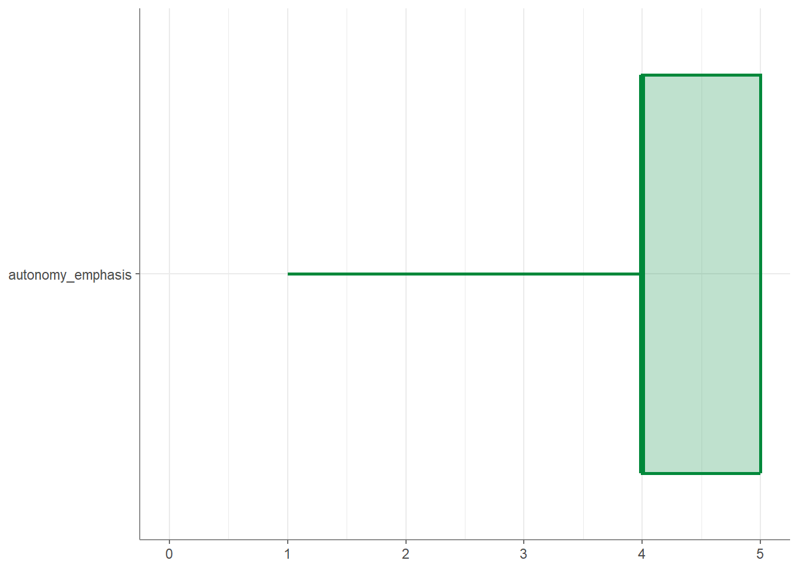
Second, the tab_percentiles function tabulates percentiles for at
least one continuous variable:
## # A tibble: 1 × 11
## Variable p10 p20 p30 p40 p50 p60 p70 p80 p90 p100
## * <chr> <dbl> <dbl> <dbl> <dbl> <dbl> <dbl> <dbl> <dbl> <dbl> <dbl>
## 1 autonomy_emphasis 3 4 4 4 4 4 4 5 5 5You can use it to tabulate percentiles for more than one variable:
## # A tibble: 2 × 11
## Variable p10 p20 p30 p40 p50 p60 p70 p80 p90 p100
## * <chr> <dbl> <dbl> <dbl> <dbl> <dbl> <dbl> <dbl> <dbl> <dbl> <dbl>
## 1 autonomy_emphasis 3 4 4 4 4 4 4 5 5 5
## 2 ethics_1 1 1 1 1 1 2 2 2 3 5You can also specify your own percentiles:
## # A tibble: 2 × 5
## Variable p16 p50 p84 p100
## * <chr> <dbl> <dbl> <dbl> <dbl>
## 1 autonomy_emphasis 3 4 5 5
## 2 ethics_1 1 1 2 5And you can visualize your percentiles:
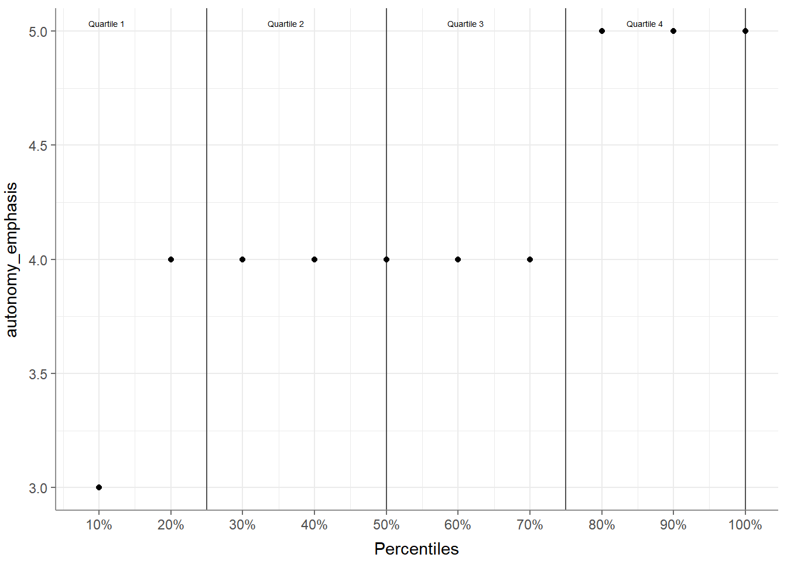
6.2.4 Bivariate analysis
You can perform a descriptive, bivariate analysis using the crosstab()
function. The crosstab() function computes contingency tables for one
independent (column) variable and one or more dependent (row) variables.
## # A tibble: 3 × 5
## employment Local Regional National Transnational
## * <chr> <dbl> <dbl> <dbl> <dbl>
## 1 Freelancer 23 36 104 9
## 2 Full-time 111 287 438 66
## 3 Part-time 15 32 75 4You can also add a ‘Total’ column to the contingency table and output column-wise percentages instead of absolute values by using additional arguments:
## # A tibble: 3 × 6
## employment Local Regional National Transnational Total
## * <chr> <dbl> <dbl> <dbl> <dbl> <dbl>
## 1 Freelancer 0.154 0.101 0.169 0.114 0.143
## 2 Full-time 0.745 0.808 0.710 0.835 0.752
## 3 Part-time 0.101 0.0901 0.122 0.0506 0.105Finally, you can visualize your variables using the visualize()
function:

6.3 How to run significance tests
6.3.1 crosstab()
The ‘crosstab()’ function also offers a chi_square argument that, when
set to TRUE, will calculate the chi-square test and Cramer’s V.
## # A tibble: 3 × 5
## employment Local Regional National Transnational
## * <chr> <dbl> <dbl> <dbl> <dbl>
## 1 Freelancer 23 36 104 9
## 2 Full-time 111 287 438 66
## 3 Part-time 15 32 75 4
## # Chi-square = 16.005, df = 6, p = 0.014, V = 0.082Remember that you can access the full documentation of this function
using the help() function, which will give you access to additional
arguments / parameters and run examples of the function:
## # A tibble: 3 × 5
## employment Local Regional National Transnational
## * <chr> <dbl> <dbl> <dbl> <dbl>
## 1 Freelancer 23 36 104 9
## 2 Full-time 111 287 438 66
## 3 Part-time 15 32 75 4
## # Chi-square = 16.005, df = 6, p = 0.014, V = 0.0826.3.2 t_test()
The t_test() function is used either to calculate a one-sample t-test
or to compute t-tests for one group variable and specified test
variables. If no variables are specified, all numeric (integer or
double) variables are used. t_test() by default tests for equal
variance (using a Levene test) to decide whether to use pooled variance
or to use the Welch approximation to the degrees of freedom.
You can provide an independent (group) variable and a dependent variable and the t-values, p-values and Cohen’s d will be calculated.
## # A tibble: 1 × 12
## Variable M_Permanent SD_Permanent M_Temporary SD_Temporary Delta_M t df
## * <chr> <num:.3!> <num:.3!> <num:.3!> <num:.3!> <num:.> <num> <dbl>
## 1 autonom… 4.124 0.768 3.887 0.870 0.237 2.171 995
## # ℹ 4 more variables: p <num:.3!>, d <num:.3!>, Levene_p <dbl>, var_equal <chr>Remember that you can always save your analysis into an R object and
inspect it with View(). This is very helpful if the resulting output
is larger than your screen:
You can also specify more than one dependent variable:
## # A tibble: 2 × 12
## Variable M_Permanent SD_Permanent M_Temporary SD_Temporary Delta_M t
## * <chr> <num:.3!> <num:.3!> <num:.3!> <num:.3!> <num:.> <num:>
## 1 autonomy_emp… 4.124 0.768 3.887 0.870 0.237 2.171
## 2 ethics_1 1.568 0.850 1.981 0.990 -0.414 -3.415
## # ℹ 5 more variables: df <dbl>, p <num:.3!>, d <num:.3!>, Levene_p <dbl>,
## # var_equal <chr>If you do not specify a dependent variable, all suitable variables in your data set will be used:
## # A tibble: 12 × 12
## Variable M_Permanent SD_Permanent M_Temporary SD_Temporary Delta_M t
## * <chr> <num:.3!> <num:.3!> <num:.3!> <num:.3!> <num:.> <num:>
## 1 autonomy_se… 3.910 0.755 3.698 0.932 0.212 1.627
## 2 autonomy_em… 4.124 0.768 3.887 0.870 0.237 2.171
## 3 ethics_1 1.568 0.850 1.981 0.990 -0.414 -3.415
## 4 ethics_2 3.241 1.263 3.509 1.234 -0.269 -1.510
## 5 ethics_3 2.369 1.121 2.283 0.928 0.086 0.549
## 6 ethics_4 2.534 1.239 2.566 1.217 -0.032 -0.185
## 7 work_experi… 17.707 10.540 11.283 11.821 6.424 4.288
## 8 trust_parli… 3.073 0.797 3.019 0.772 0.054 0.480
## 9 trust_gover… 2.870 0.847 2.642 0.811 0.229 1.918
## 10 trust_parti… 2.430 0.724 2.358 0.736 0.072 0.703
## 11 trust_polit… 2.533 0.707 2.396 0.689 0.136 1.369
## 12 ethical_con… 2.428 0.772 2.585 0.774 -0.157 -1.443
## # ℹ 5 more variables: df <dbl>, p <num:.3!>, d <num:.3!>, Levene_p <dbl>,
## # var_equal <chr>If you have an independent (group) variable with more than two levels,
you can also specify the levels that you want to use for your
t_test():
## # A tibble: 1 × 12
## Variable `M_Full-time` `SD_Full-time` M_Freelancer SD_Freelancer Delta_M t
## * <chr> <num:.3!> <num:.3!> <num:.3!> <num:.3!> <num:.> <num>
## 1 autonom… 4.118 0.781 3.901 0.852 0.217 3.287
## # ℹ 5 more variables: df <dbl>, p <num:.3!>, d <num:.3!>, Levene_p <dbl>,
## # var_equal <chr>Finally, t_test() by default tests for equal variance (using a Levene
test) to decide whether to use pooled variance or to use the Welch
approximation to the degrees of freedom. This is an example for the use
of Welch’s approximation to account for unequal variances between
groups:
## # A tibble: 1 × 12
## Variable M_Permanent SD_Permanent M_Temporary SD_Temporary Delta_M t df
## * <chr> <num:.3!> <num:.3!> <num:.3!> <num:.3!> <num:.> <num> <dbl>
## 1 autonom… 3.910 0.755 3.698 0.932 0.212 1.627 56
## # ℹ 4 more variables: p <num:.3!>, d <num:.3!>, Levene_p <dbl>, var_equal <chr>You can also run a one-sample t-test (also called: location test) by
providing a variable and checking whether the mean of this variable is
equal to a provided population mean mu:
## # A tibble: 1 × 9
## Variable M SD CI_95_LL CI_95_UL Mu t df p
## * <chr> <dbl> <dbl> <dbl> <dbl> <dbl> <dbl> <dbl> <dbl>
## 1 autonomy_selection 3.88 0.803 3.83 3.92 3 37.7 1196 6.32e-206Finally, you can visualize your test results by calling the
visualize() function:
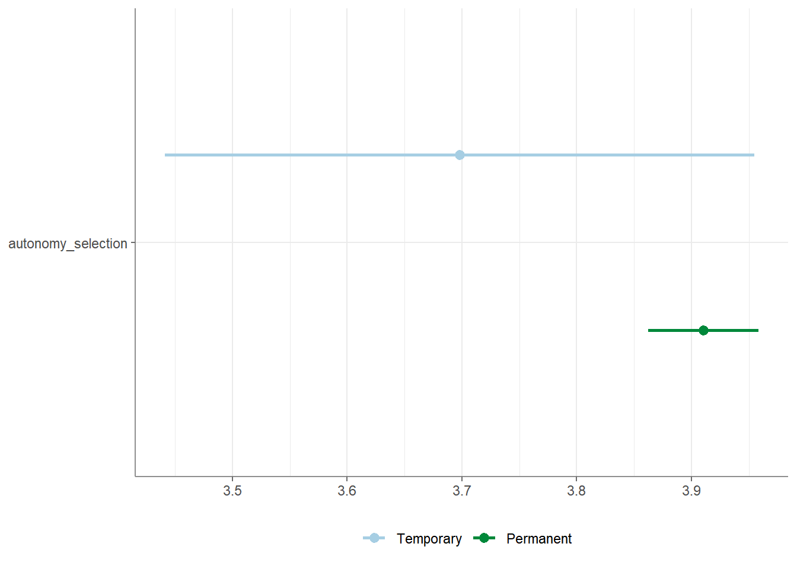
To access the full documentation / help:
6.3.3 unianova()
The unianova() function is used to compute one-way ANOVAs for one
group variable and specified test variables. If no variables are
specified, all numeric (integer or double) variables are used.
Additionally, unianova() also conducts a Levene test just like the
t_test() function to check the assumption of equal variances. If the
data doesn’t meet this assumption, the function will switch to using
Welch’s test.
For PostHoc tests, Tukey’s HSD is the default choice. However, if the assumption of equal variances isn’t met, the function will instead automatically use the Games-Howell test.
unianova works similarly to t_test(), i.e., you specify an
independent (group) variable followed by one or more dependent
variables.
## # A tibble: 1 × 8
## Variable F df_num df_denom p eta_squared Levene_p var_equal
## * <chr> <num:.> <dbl> <dbl> <num> <num:.3!> <dbl> <chr>
## 1 autonomy_emphasis 5.861 2 1192 0.003 0.010 0.175 TRUEProvide only an independent variable to use all suitable variables in your data set as dependent variables:
## # A tibble: 12 × 9
## Variable F df_num df_denom p omega_squared eta_squared Levene_p
## * <chr> <num:> <dbl> <dbl> <num> <num:.3!> <num:.3!> <dbl>
## 1 autonomy_sel… 2.012 2 251 0.136 0.002 NA 0
## 2 autonomy_emp… 5.861 2 1192 0.003 NA 0.010 0.175
## 3 ethics_1 2.171 2 1197 0.115 NA 0.004 0.093
## 4 ethics_2 2.204 2 1197 0.111 NA 0.004 0.802
## 5 ethics_3 5.823 2 253 0.003 0.007 NA 0.001
## 6 ethics_4 3.453 2 1197 0.032 NA 0.006 0.059
## 7 work_experie… 3.739 2 240 0.025 0.006 NA 0.034
## 8 trust_parlia… 1.527 2 1197 0.218 NA 0.003 0.103
## 9 trust_govern… 12.864 2 1197 0.000 NA 0.021 0.083
## 10 trust_parties 0.842 2 1197 0.431 NA 0.001 0.64
## 11 trust_politi… 0.328 2 1197 0.721 NA 0.001 0.58
## 12 ethical_conc… 2.408 2 1197 0.090 NA 0.004 0.206
## # ℹ 1 more variable: var_equal <chr>You can obtain the descriptives (mean and standard deviation for all
group levels) by providing the additional argument
descriptives = TRUE.
## # A tibble: 1 × 14
## Variable F df_num df_denom p eta_squared `M_Full-time` `SD_Full-time`
## * <chr> <num> <dbl> <dbl> <num> <num:.3!> <dbl> <dbl>
## 1 autonomy… 5.861 2 1192 0.003 0.010 4.12 0.781
## # ℹ 6 more variables: `M_Part-time` <dbl>, `SD_Part-time` <dbl>,
## # M_Freelancer <dbl>, SD_Freelancer <dbl>, Levene_p <dbl>, var_equal <chr>Similarly, you can retrieve PostHoc tests by providing the additional
argument post_hoc = TRUE (default: Tukey’s HSD, otehrwise:
Games-Howell). Please note that the post-hoc test results are best
inspected by saving your analysis in a separate model and then using
View(). Once View() has opened your model, you can navigate to the
rightmost part and click on the 1 variable cell under the post hoc
column. This will display your post hoc test results.
## # A tibble: 1 × 9
## Variable F df_num df_denom p eta_squared post_hoc Levene_p var_equal
## * <chr> <num> <dbl> <dbl> <num> <num:.3!> <list> <dbl> <chr>
## 1 autonomy_… 5.861 2 1192 0.003 0.010 <df> 0.175 TRUEAlternatively, you can extract the PostHoc test results with this code:
WoJ %>%
unianova(employment, autonomy_selection, post_hoc = TRUE) %>%
dplyr::select(Variable, post_hoc) %>%
tidyr::unnest(post_hoc)## # A tibble: 3 × 11
## Variable Group_Var contrast Delta_M conf_lower conf_upper p d se
## <chr> <chr> <chr> <dbl> <dbl> <dbl> <dbl> <dbl> <dbl>
## 1 autonom… employme… Full-ti… -0.0780 -0.225 0.0688 0.422 -0.110 0.0440
## 2 autonom… employme… Full-ti… -0.139 -0.329 0.0512 0.199 -0.155 0.0569
## 3 autonom… employme… Part-ti… -0.0607 -0.284 0.163 0.798 -0.0729 0.0670
## # ℹ 2 more variables: t <dbl>, df <dbl>If the variances are not equal, a Welch test and a Games-Howell test will be performed automatically, replacing the classic ANOVA method:
## # A tibble: 1 × 14
## Variable F df_num df_denom p omega_squared `M_Full-time`
## * <chr> <num:.3!> <dbl> <dbl> <num> <num:.3!> <dbl>
## 1 autonomy_selection 2.012 2 251 0.136 0.002 3.90
## # ℹ 7 more variables: `SD_Full-time` <dbl>, `M_Part-time` <dbl>,
## # `SD_Part-time` <dbl>, M_Freelancer <dbl>, SD_Freelancer <dbl>,
## # Levene_p <dbl>, var_equal <chr>WoJ %>%
unianova(employment, autonomy_selection, post_hoc = TRUE) %>%
dplyr::select(Variable, post_hoc) %>%
tidyr::unnest(post_hoc)## # A tibble: 3 × 11
## Variable Group_Var contrast Delta_M conf_lower conf_upper p d se
## <chr> <chr> <chr> <dbl> <dbl> <dbl> <dbl> <dbl> <dbl>
## 1 autonom… employme… Full-ti… -0.0780 -0.225 0.0688 0.422 -0.110 0.0440
## 2 autonom… employme… Full-ti… -0.139 -0.329 0.0512 0.199 -0.155 0.0569
## 3 autonom… employme… Part-ti… -0.0607 -0.284 0.163 0.798 -0.0729 0.0670
## # ℹ 2 more variables: t <dbl>, df <dbl>Finally, you can visualize your test results by calling the
visualize() function:
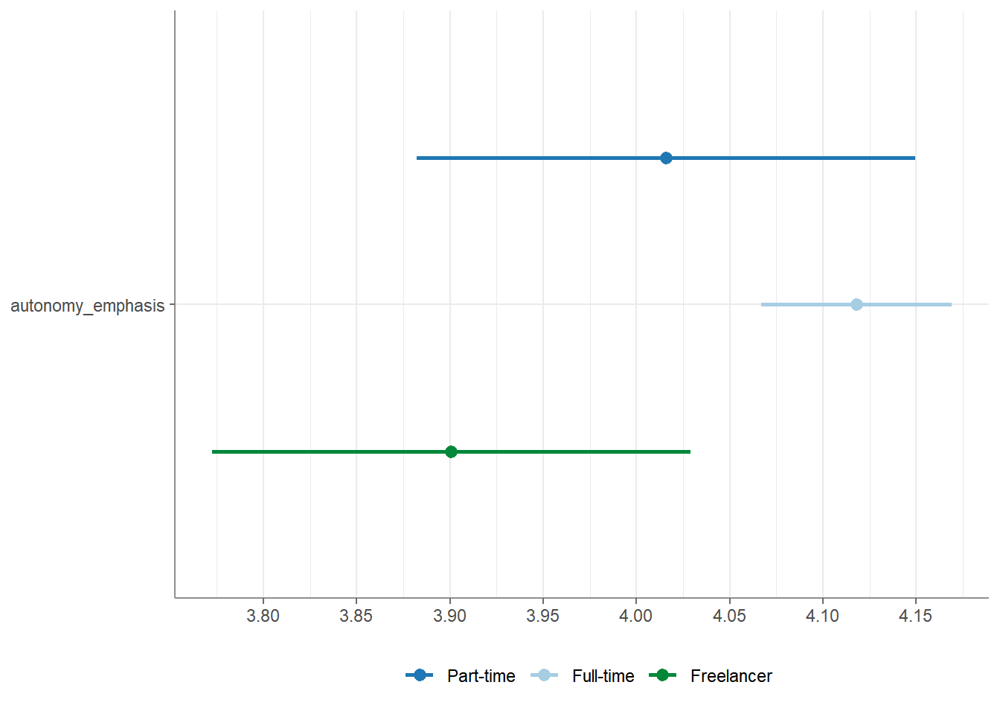
For full documentation / help:
6.3.4 correlate()
The correlate() function computes correlation coefficients for all
combinations of the specified variables. If no variables are specified,
all numeric (integer or double) variables are used.
## # A tibble: 1 × 5
## x y r df p
## * <chr> <chr> <dbl> <int> <dbl>
## 1 ethics_1 autonomy_selection -0.0766 1195 0.00798Once again, you can specify more than two variables:
## # A tibble: 3 × 5
## x y r df p
## * <chr> <chr> <dbl> <int> <dbl>
## 1 ethics_1 autonomy_selection -0.0766 1195 0.00798
## 2 ethics_1 work_experience -0.103 1185 0.000387
## 3 autonomy_selection work_experience 0.161 1182 0.0000000271Three variables? That screams “partial correlation” to me! If you’d like
to calculate the partial correlation coefficient of three variables,
just add the optional parameter partial = TRUE.
## # A tibble: 3 × 6
## x y z r df p
## * <chr> <chr> <chr> <dbl> <dbl> <dbl>
## 1 ethics_1 autonomy_selection work_experience -0.0619 1181 3.32e-2
## 2 ethics_1 work_experience autonomy_selection -0.0924 1181 1.46e-3
## 3 work_experience autonomy_selection ethics_1 0.154 1181 1.03e-7And you can get the correlation for all suitable variables in your data set:
## # A tibble: 66 × 5
## x y r df p
## * <chr> <chr> <dbl> <int> <dbl>
## 1 autonomy_selection autonomy_emphasis 0.644 1192 4.83e-141
## 2 autonomy_selection ethics_1 -0.0766 1195 7.98e- 3
## 3 autonomy_selection ethics_2 -0.0274 1195 3.43e- 1
## 4 autonomy_selection ethics_3 -0.0257 1195 3.73e- 1
## 5 autonomy_selection ethics_4 -0.0781 1195 6.89e- 3
## 6 autonomy_selection work_experience 0.161 1182 2.71e- 8
## 7 autonomy_selection trust_parliament -0.00840 1195 7.72e- 1
## 8 autonomy_selection trust_government 0.0414 1195 1.53e- 1
## 9 autonomy_selection trust_parties 0.0269 1195 3.52e- 1
## 10 autonomy_selection trust_politicians 0.0109 1195 7.07e- 1
## # ℹ 56 more rowsYou might want to turn these correlations into an advanced correlation
matrix, just like you find them in SPSS. You can do that using an
additional function to_correlation_matrix after your correlate()
function:
## # A tibble: 12 × 13
## r autonomy_selection autonomy_emphasis ethics_1 ethics_2 ethics_3
## * <chr> <dbl> <dbl> <dbl> <dbl> <dbl>
## 1 autonomy_sel… 1 0.644 -0.0766 -0.0274 -0.0257
## 2 autonomy_emp… 0.644 1 -0.114 -0.0337 -0.0297
## 3 ethics_1 -0.0766 -0.114 1 0.172 0.165
## 4 ethics_2 -0.0274 -0.0337 0.172 1 0.409
## 5 ethics_3 -0.0257 -0.0297 0.165 0.409 1
## 6 ethics_4 -0.0781 -0.127 0.343 0.321 0.273
## 7 work_experie… 0.161 0.155 -0.103 -0.168 -0.0442
## 8 trust_parlia… -0.00840 -0.00465 -0.0378 0.00161 -0.0486
## 9 trust_govern… 0.0414 0.0268 -0.102 0.0374 -0.0743
## 10 trust_parties 0.0269 0.0102 -0.0472 0.0238 -0.0115
## 11 trust_politi… 0.0109 0.00242 -0.00725 0.0250 -0.0212
## 12 ethical_conc… -0.0738 -0.108 0.555 0.734 0.687
## # ℹ 7 more variables: ethics_4 <dbl>, work_experience <dbl>,
## # trust_parliament <dbl>, trust_government <dbl>, trust_parties <dbl>,
## # trust_politicians <dbl>, ethical_concerns <dbl>Of course, you can change the correlation method:
- Using Pearson’s r (default):
## # A tibble: 1 × 5
## x y r df p
## * <chr> <chr> <dbl> <int> <dbl>
## 1 ethics_1 autonomy_selection -0.0766 1195 0.00798- Using Spearman’s rho:
## # A tibble: 1 × 5
## x y rho df p
## * <chr> <chr> <dbl> <lgl> <dbl>
## 1 ethics_1 autonomy_selection -0.0716 NA 0.0132- Using Kendall’s tau:
## # A tibble: 1 × 5
## x y tau df p
## * <chr> <chr> <dbl> <lgl> <dbl>
## 1 ethics_1 autonomy_selection -0.0646 NA 0.0130Finally, you can visualize your test results by calling the visualize() function. Based on your input variables and whether you want to visualize a partial correlation, the choice of graph might vary:
- Visualize a bivariate correlation:
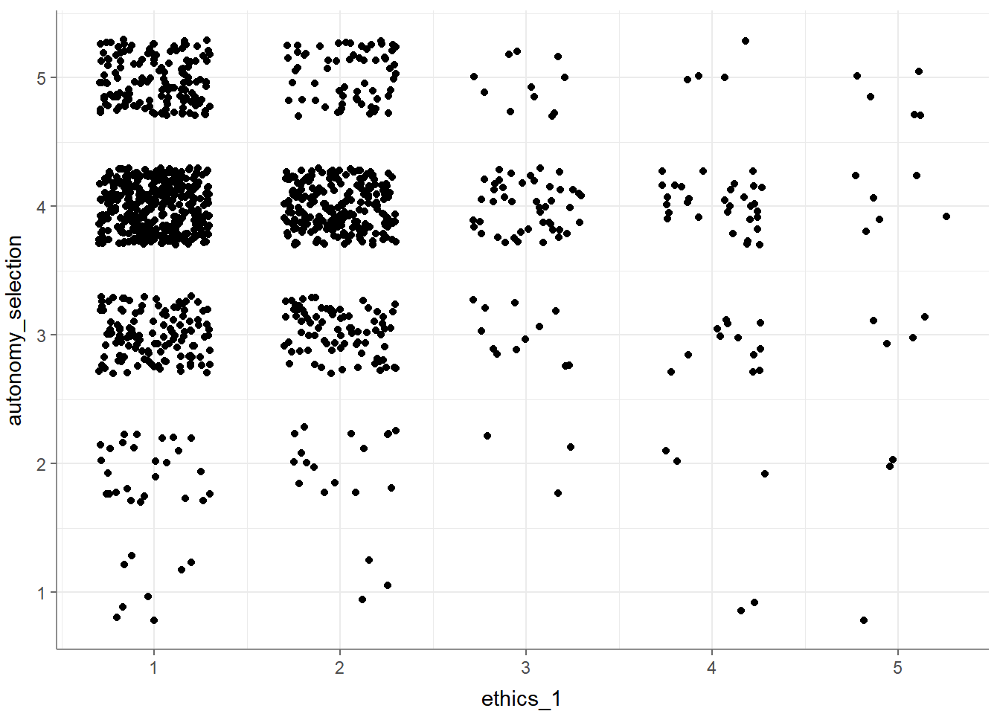
- Visualize with multiple variables:
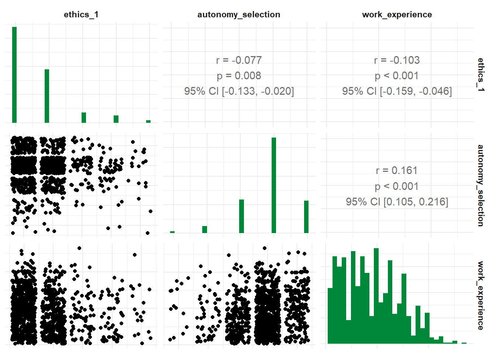
- Visualize a partial correlation:
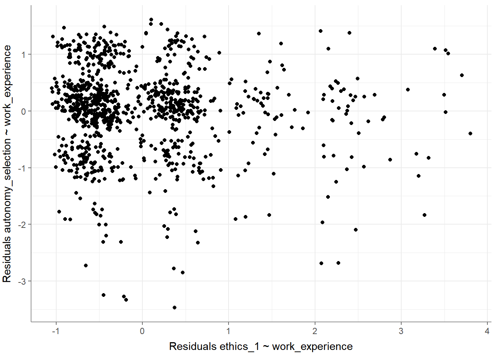
Of course, you can always get help:
6.3.5 regress()
Finally, you can also run linear regressions. The regress() function
will compute a linear regression for all independent variables on the
specified dependent variable.
## # A tibble: 3 × 6
## Variable B StdErr beta t p
## * <chr> <dbl> <dbl> <dbl> <dbl> <dbl>
## 1 (Intercept) 2.03 0.129 NA 15.8 5.32e-51
## 2 autonomy_selection -0.0692 0.0325 -0.0624 -2.13 3.32e- 2
## 3 work_experience -0.00762 0.00239 -0.0934 -3.19 1.46e- 3
## # F(2, 1181) = 8.677001, p = 0.000182, R-square = 0.014482You can also perform a linear modeling of multiple independent variables (this will use stepwise regression modeling):
## # A tibble: 3 × 6
## Variable B StdErr beta t p
## * <chr> <dbl> <dbl> <dbl> <dbl> <dbl>
## 1 (Intercept) 2.03 0.129 NA 15.8 5.32e-51
## 2 autonomy_selection -0.0692 0.0325 -0.0624 -2.13 3.32e- 2
## 3 work_experience -0.00762 0.00239 -0.0934 -3.19 1.46e- 3
## # F(2, 1181) = 8.677001, p = 0.000182, R-square = 0.014482You can even check the preconditions of a linear regression (e.g., multicollinearity and homoscedasticity) by providing optional arguments / parameters:
WoJ %>% regress(ethics_1, autonomy_selection, work_experience,
check_independenterrors = TRUE,
check_multicollinearity = TRUE,
check_homoscedasticity = TRUE
)## # A tibble: 3 × 8
## Variable B StdErr beta t p VIF tolerance
## * <chr> <dbl> <dbl> <dbl> <dbl> <dbl> <dbl> <dbl>
## 1 (Intercept) 2.03 0.129 NA 15.8 5.32e-51 NA NA
## 2 autonomy_selection -0.0692 0.0325 -0.0624 -2.13 3.32e- 2 1.03 0.974
## 3 work_experience -0.00762 0.00239 -0.0934 -3.19 1.46e- 3 1.03 0.974
## # F(2, 1181) = 8.677001, p = 0.000182, R-square = 0.014482
## - Check for independent errors: Durbin-Watson = 2.037690 (p = 0.586000)
## - Check for homoscedasticity: Breusch-Pagan = 6.966472 (p = 0.008305)
## - Check for multicollinearity: VIF/tolerance added to outputOr you can make visual inspections to check the preconditions using several different visualizations:
- Base visualization:
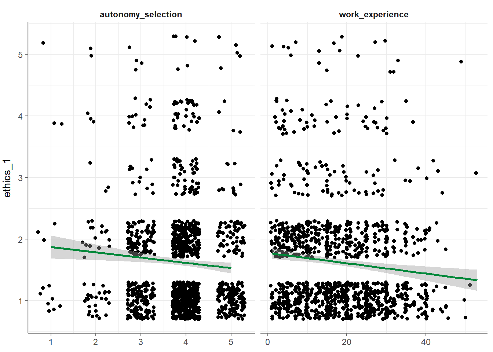
- Correlograms among independent variables:
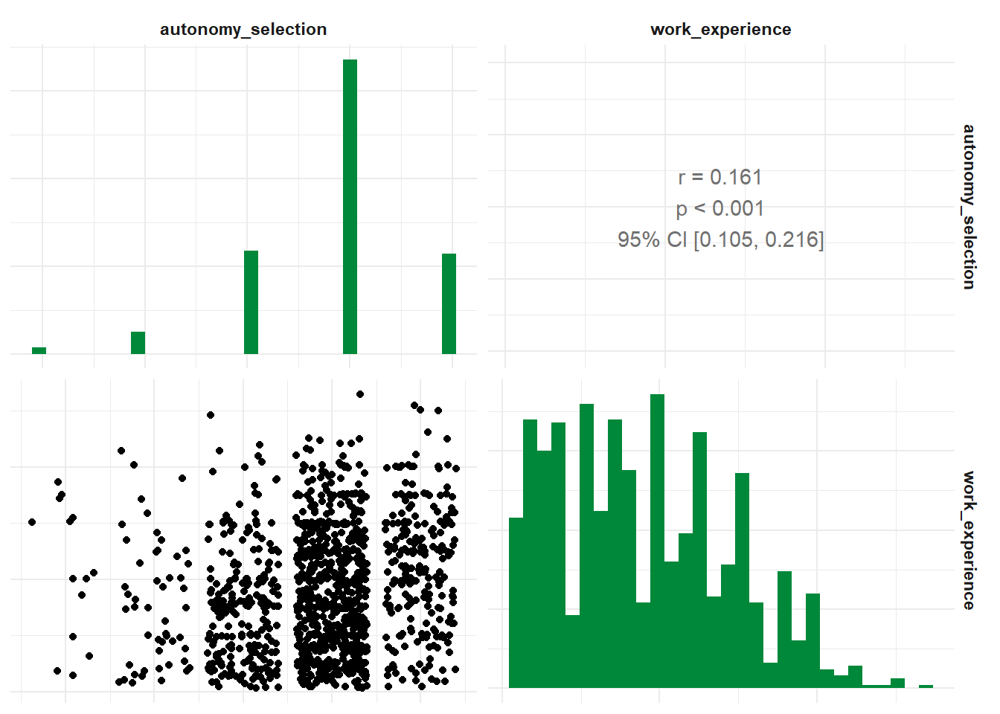
- Residuals-versus-fitted plot to determine distributions:
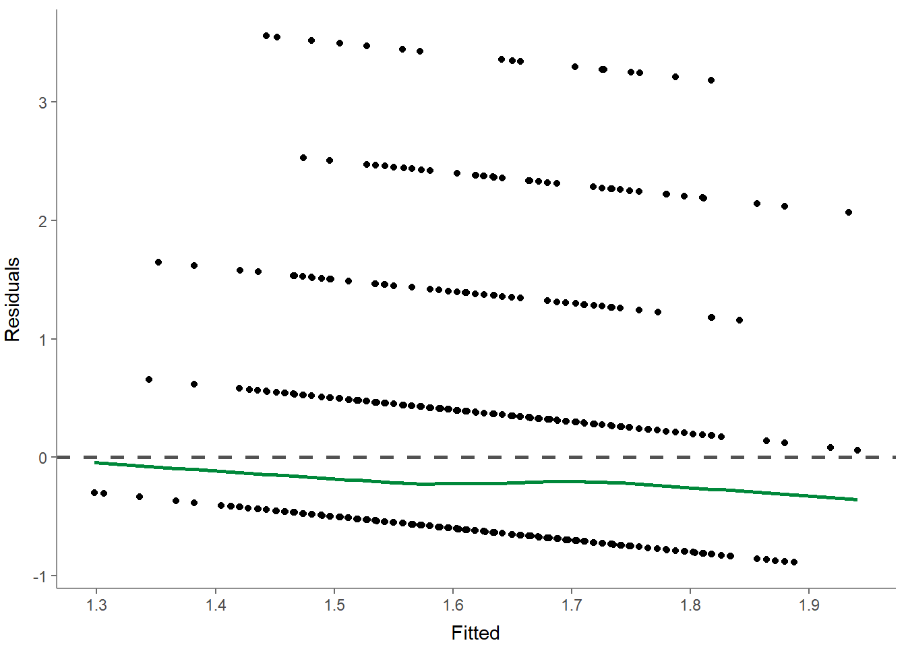
- Normal probability-probability plot to check for multicollinearity:
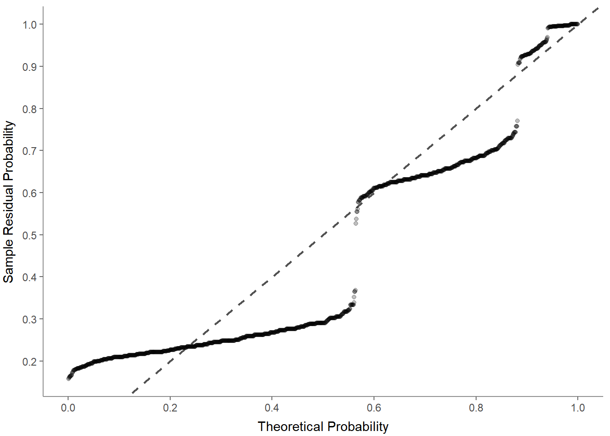
- Scale-location (sometimes also called spread-location) plot to check whether residuals are spread equally (to help check for homoscedasticity):
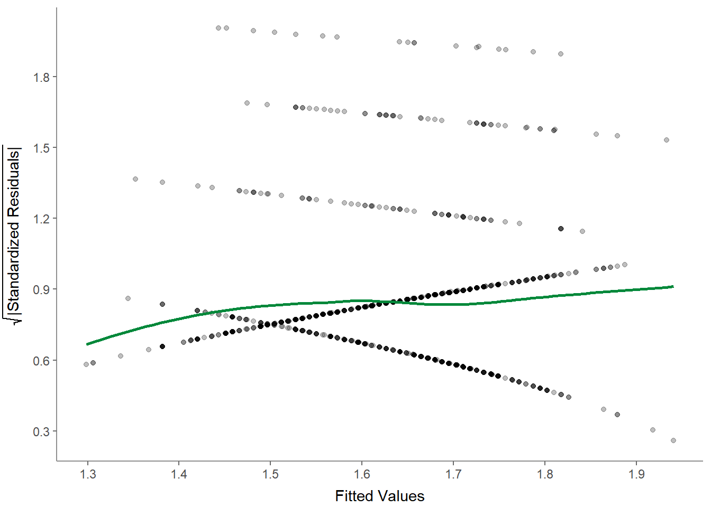
- Residuals-versus-leverage plot to check for influential outliers affecting the final model more than the rest of the data:
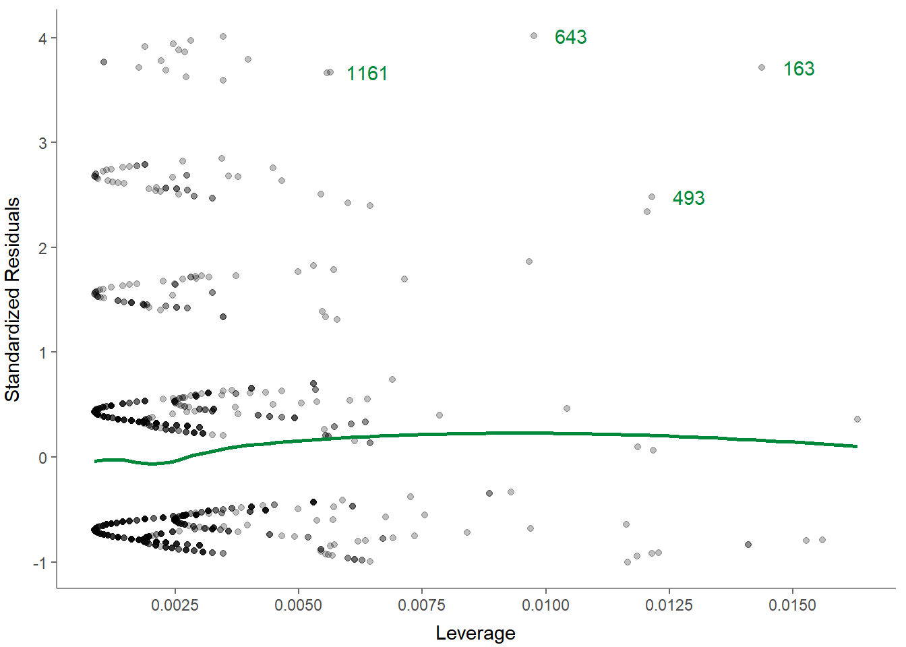
Again, you can always get help: